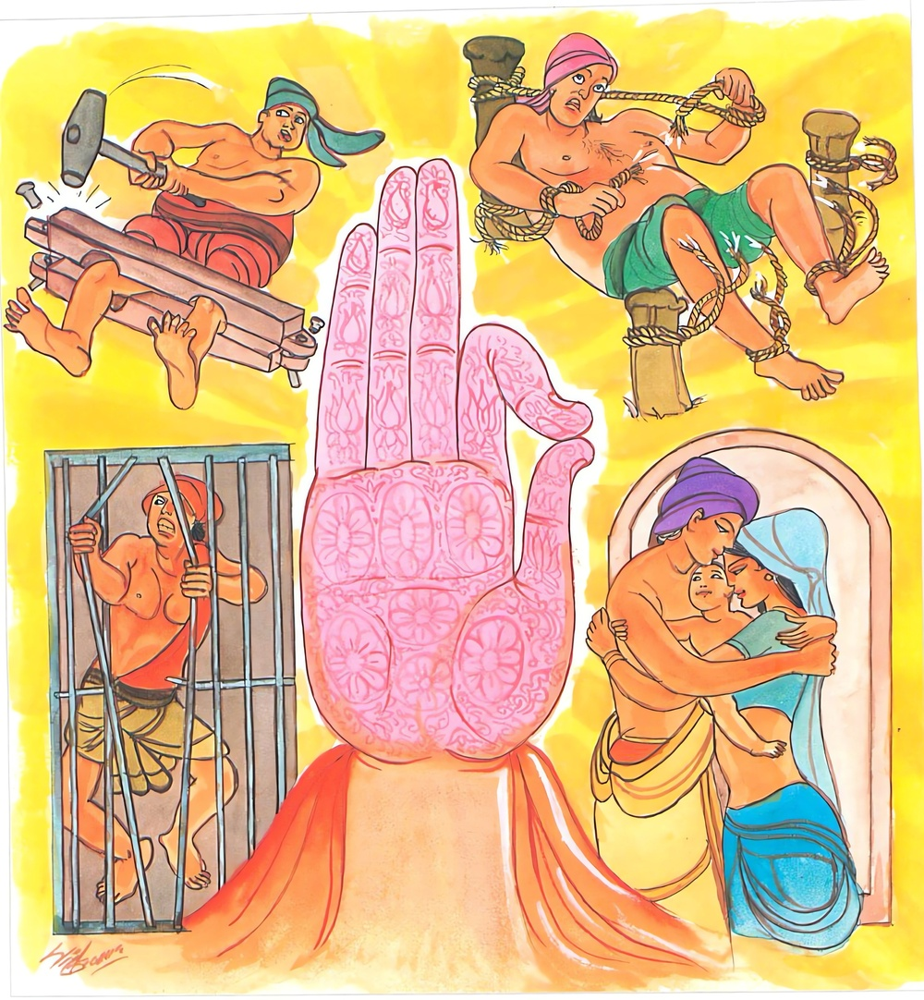
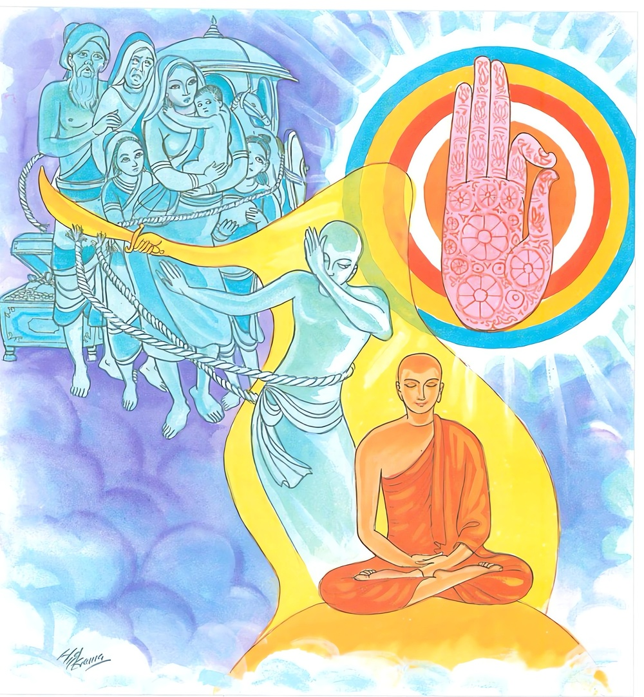

24-4 සිරගෙයි ලූ හොරු
මෙම කතාව ධම්මපද අටුවාවෙන් ද කියවන්න.
න තං දළ්හං බන්ධනමාහු ධීරා
යදායසං දාරුජං බබ්බජඤ්ච.
සාරත්තරත්තා මණිකුණ්ඩලෙසු
පුත්තෙසු දාරෙසු ච යා අපෙඛා.
යකඩින් කරණ ලද්දා වූ ද දඬුයෙන් කරණ ලද්දා වූ ද බබුස් තණින් කරණ ලද්දා වූ ද යම් බන්ධනයෙක් වේ ද, ඒ සියල්ල ම (කඩු ආදියෙන් සින්දැ හැකි බැවින්) දැඩි බැඳුම් යැ යි පණ්ඩිතයෝ නො කියති. මිණිකොඬොල්හි ඉතා ඇලුනාවු යම් කෙනෙක් වෙත් නම් (ඔවුන්ගේ ඒ රාගය ද,) දූදරුවන් කෙරෙහිත් අඹුවන් කෙරෙහිත් යම් අපේක්ෂාවෙක් (තෘෂ්ණාවෙක්) වේ ද,

එතං දළ්හං බන්ධනමාහු ධීරා
ඔහාරිනං සිථිලං දුප්පමුඤ්චං
එතම්පි ඡෙත්වාන පරිබ්බජන්ති
අනපෙක්ඛිනො කාමසුඛං පහාය.
මේ කෙලෙස් බැම්ම ප්රාඥයෝ (අපායෙහි ඇද හෙලන හෙයින්) යට බලා යන්නා වූ, (බැඳි තැන සිවි ආදිය නො සිඳ ලේ නො සොල්ලා බැඳි බව ද නො දන්වා හැම කර්මාන්ත ද කරණුවට අවසර දෙන හෙයින්) ලිහිල් වූ, උනා හැරපියන්නට දුෂ්කර වූ දැඩි බැම්ම යැ යි කියත්. (නුවණැත්තෝ) මෙය පවා (නුවණ කගින්) සිඳ, (වස්තුකාම ක්ලේශකාමයෙහි) අපේක්ෂා නැත්තෝ කම්සුව හැර පැවිදි වන්නාහ.

එක් කලෙක නගරාරක්ෂක රාජපුරුෂයෝ උමංබිඳීම්, මං පැහැරීම්, මිනීමැරීම් ඈ කරමින් තැන තැන යන සොරුන් අල්ලා කොසොල් රජු වෙතට පැමිණ වූහ. රජ තෙමේ ඔවුන් දඬු කඳෙහි ගැස් වී ය. රැහැණින් හැකිල්ලෙන් බැන්ද වී ය. මෙ දවස අවට දනවු වැසි භික්ෂූන් වහන්සේලා බුදුරජුන් දක්නට අවුත් බුදුරජුන් දැක වැඳ පසුදා සැවැත්නුවරට පිඩු සිඟා ගියාහු සිරගෙය බැලීම ද ගියහ. එහි දී දඬුකඳ ගසා රැහැණින් හැකිල්ලෙන් බැඳ දමාහුන් සොරුන් දැක පිණ්ඩපාතයෙන් හැරී අවුත් එදා ම සවස බුදුරජුන් වෙත ගියහ. ගොස් වැඳ “ස්වාමීනි! අද අපි පිණ්ඩපාතය ගිය ගමනේ දී සිරගෙයි වැඩී දුක් විඳුනා සිරකරුවන් බලන්නට සිර ගෙට ද ගියෙමු; එහි දී අන්දුබන්ධනාදියෙන් බැඳී තදවී මහත් දුක් විඳුනා සොරු බොහෝ ගණනක් අපට දක්නට ලැබින, ඔවුනට ඒ බැඳුම් කඩා සිඳ දමා යනු ද නො හැකි ය, ඉවසිය හැකි දුකෙක් නො වේ ඔවුන් විඳුනේ; ස්වාමීනි! ලෝකයෙහි මේ බැඳුම්වලටත් වඩා තවත් තර බැඳුම් දැඩි බැඳුම් තිබේ දැ?” යි ඇසූහ.
“මහණෙනි! සිරගෙයි බැඳුම් මොන මහත් බැඳුම් ද, වතු පිටි ගේ දොර මිල මුදල් රන් රිදී ආදියෙහි හා අඹු දරුවන් කෙරෙහි ආශ්රයෙන් බැඳෙන කෙලෙස් බැඳුම් ඉතා දැඩි ය, ඉතා මහත් ය, නො සියහෙන දුක් දෙන්නේ ය, මේ කෙලෙස් බැඳුම්, සිරගෙයි බැඳුමට වඩා සිය දහස් ගුණයෙන් මහත් ය, ලෙහෙසියෙන් පහසුවෙන් නො බිඳිය හැකි මේ කෙලෙස් බැඳුම් නැවණැති පැරණියෝ සිඳ බිඳ දමා වතුපිටි ගේදොර මිලමුදල් අඹුදරු නෑසියන් හැර දමා හිමවතට වැද පැවිදි වූහ”යි අතීත පුවතක් ගෙණ දැක්වූ සේක.
“පෙර බරණැස, බඹදත් රජු රජ ය කරණ කල්හි මහසත් තෙමේ එක් දුප්පත් ගැහැවිකුලයෙක් උපන්නේ ය, වයසින් වැඩී යත් ම පියා කලුරිය කෙළෙන් මහසත් ඒ ඒ තැන ගෙවල කුලී වැඩ කොට උපයා ගත් මිල මුදලින් මව පිළිදැගුම් කෙළේ ය, ඒ අතර මවු තොමෝ මහසතුන් නො කැමැතිබව කියද්දී ම ඔහුට කුලදුවක ගිවිස්සා ගෙණ වුත් ශරණ කොට දුන්නී ය, පුතුගේ ශරණයෙන් ටික දිනකදී ඕ කලුරිය කළා ය, ඒ කාලයෙහි බෝසත් බිරියගේ කුස, දරුගැබෙක් හට ගත්තේ ය, බෝසත්, සිය බිරිය කුස දරුගැබක් හට ගත්බව නො දැන බිරිය අමතා ‘සොඳුර! කුලී වැඩ කොට හෝ පිළිවන් ලෙසකින් තී දිවි රැක ගන්න. මට මේ දිවියෙන් වැඩෙක් නැත, මම පැවිදි වන්නෙමි, මට එයට කැමැත්ත දෙන්නැ’යි කීය, එවිට භාර්ය්යා තොමෝ ‘හිමියෙනි! මා කුස දරුගැබෙක් පිහිටා ඇත, එ දරු බිහි වූ පසු දරු ද බලා ගොස් පැවිදි වනු මැනැවැ’යි කිවු ය, බෝසත් ‘ඒ යහපතැ’යි බිරිය කියූ බස් පිළිගෙණ පැවිද්ද කල් තැබී ය, බිරිය ද දරු ප්රසූත කලා, ඉන් පසු බෝසත් ‘සොඳුර, තී ඉතා පහසුවෙන් ගැහැටක් නො ලබා දරු වැදූ, දැන් ඉතින් මම පැවිදි වන්නෙම් දැ?’යි ඇසූ විට ‘තව පොඩ්ඩක් නවතිනු මැනැව, දරු කිරෙන් වළකිනතුරු බලාපොරොත්තු වන්නැ’යි ඉල්ලූ ය. එ බස් ද පිළිගෙණ තමන් වළකා සිටිය දී ම බිරිය කුස තවත් දරු ගැබෙක් පිහිටියේ ය, ඒ අතර බෝසත් තෙමේ ‘මාගේ අදහසට මෑ නතු කර ගන්නට නො හැකි බව පෙණේ, එහෙයින් මැයට නො දන්වා ම පැන ගොස් පැවිදි වන්නේමි’යි සිතා බිරියට නො දන්වා ම මහ රෑ නින්දෙන් නැගිට ගෙන් නික්ම ගියේ ය, එසේ නික්ම ගිය ඔහු නගරාරක්ෂක නිලධරයන්ගේ අතට හසු විය, එවිට බෝසත් ම වැන්දඹු මවක පිළිදගින්නෙක්මි, මා මුදාහළ මැනැවැ’යි කියා ඔවුන්ගෙන් මිදී ටික දිනක් එක් තැනක වැස හිමවතට වැදී ඉසි පැවිද්දෙන් පැවිදි ව අභිඥාසමාපත්තීන් උපදවා ධ්යානක්රීඩායෙන් යුක්ත ව කල් ගෙවී ය, බෝසත් තවුස් එහි මෙසේ වසනුයේ ‘මම මෙලොව කිසිවක්හටත් ලෙහෙසියෙන් පහසුවෙන් නො සිඳිය හැකි අඹුදරුවන් කෙරෙහි බැඳීම, උන් කෙරෙහි කෙලෙස් විසින් බැඳීම සිඳ හළෙමි’යි උදන් ඇණී ය” යි මේ ඉකුත් වත ගෙණ හැර දක්වා ඔහු විසින් උදන් ඇණූ උදානය ප්රකාශ කරණ සේක් බුදුරජානන් වහන්සේ මේ ධර්මදේශනාව කළ සේක.
න තං දළ්හං බන්ධනමාහු ධීරා
යදායසං දාරුජං බබ්බජඤ්ච,
සාරත්තරත්තා මණිකුණ්ඩලෙසු
පුත්තෙසු දාරෙසු ච යා අපෙක්ඛා.
.
එති දළ්හං බන්ධනමාහු ධීරා
ඔහාරිනං සිථිලං දුප්පමුඤ්චං,
එතම්පි ඡෙත්වාන පරිබ්බජන්ති
අනපෙක්ඛිනො කාමසුඛං පහායාති.
යකඩින් කළ දැවයෙන් කළ බබසුතණින් කළ (යම් බන්ධනයෙක් වේ ද) ඒ හැම බන්ධන නුවණැත්තෝ දැඩි බැඳුම්ය යි නො කියත්. මැණික්වල හා කොඬොල්හි නොහොත් මිණිඔබා කළ කොඬොල්හි තදින් ඇලුනා වූ නොහොත් සාරබව නිසා ඇලුනා වූ යම් තෘෂ්ණායෙක් වේ ද, පුතුන් කෙරෙහි හා අඹුවන් කෙරෙහි හා යම් බලාපොරොත්තුවක් වේ ද,
නුවණැත්තෝ මේ බන්ධනය යට බලා යන ලිහිල් වූ නො මුදාලිය හැකි දැඩි බැඳුමැ යි කියත්. මේ බැඳුම ද සිඳ දමා බලාපොරොත්තු නැතියෝ කම්සැප හැර දමා පැවිදි වෙත්.
න තං දළ්හං බන්ධනං ආහු ධීරා යං ආයසං දාරුජං බබ්බජං ච = නුවණැත්තෝ යකඩින් කළ දැවයෙන් කළ බබුස් තණින් කළ යම් බන්ධනයෙක් වේ ද ඒ බන්ධන දැඩි බැඳුම්ය යි නො කියත්. [1]
බුද්ධා දී වූ ධීරයෝ යකඩින් කළ හැකිළි බැඳුම්, දඬුයෙන් කළ දඬුකඳ ගැසීම්, බබුස්තණ ඈ අඹරා කළ රැහැන් බැඳුම් යන මෙ හැම බැඳුමක් කඩු සැත් ආදියෙන් සිඳ බිඳ දැමිය හැකි බැවින් මේ එක ද බැඳුමක් දැඩි බැඳුම්ය යි දුක් උපදවන බැඳුම්ය යි නො වදාරත්.
මැණික් ගැන, කන් අබරණ ගැණ, නැත, මැණික් ඔබ්බා කළ කළ කන් අබරණ ගැණ යම් කෙනෙක් තදින් ඇලී සිටිත් නම්, ඔවුන්ගේ එ තැන්හි ඇලීමත්, එසේ ම අඹුදරුවන් කෙරෙහි යම් තෘෂ්ණාවක් වේ නම්, ඒ කෙලෙස් බැඳුමත් දැඩි බැඳුම්ය යි වදාරත්. එහෙයින් ධීරයෝ සත්ත්වයා අපායයට හෙළන, බැඳි තැන සිවි මස් නො සිඳ ලේ නො සොල්වා බැඳි බව ද නො දන්වා හැම කටයුතු කරන්නට ඉඩ පහසු සලසන බැවින් ලිහිල් වූ එක් වරකුත් උපන් කෙලෙස් බැඳුම් ඩැහ ගත් තැනින් කට හරවා ගත නො හැකි කැසුබුවකු මෙන් ගලවා ගත නො හැකි බැවින් උනාලන්නට නො හැකි වූ මේ කෙලෙස් බැඳුම්, නුවණ නැමැති කඩුවෙන් කපා හැර සියලු කම්සැප හැර දමා නිවන් පිණිස පැවිදි වන්නාහු ය.
ධර්මදේශනාවගේ අවසානයෙහි බොහෝ දෙන සෝවන්ඵලාදියට පැමිණියාහු ය.
බන්ධනාගාර වස්තුව නිමි.
-
2-1 ‘ධීරා’ යනු බලනු. ↑